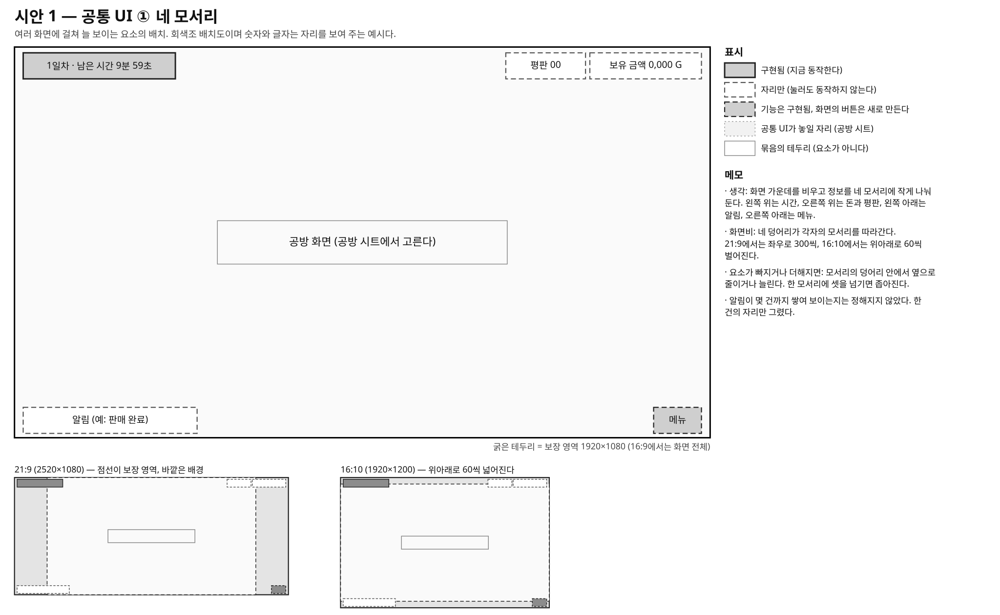
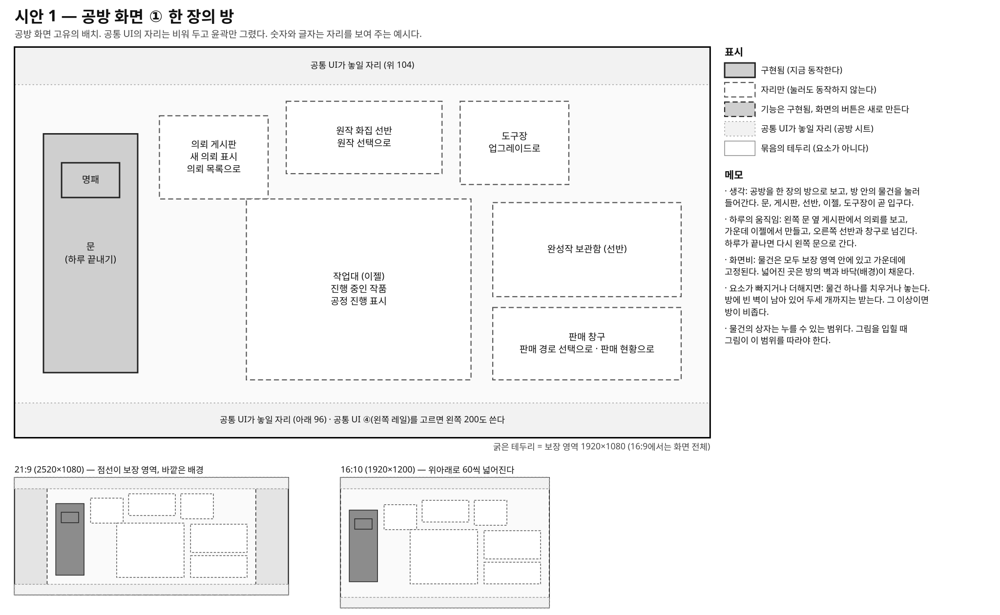
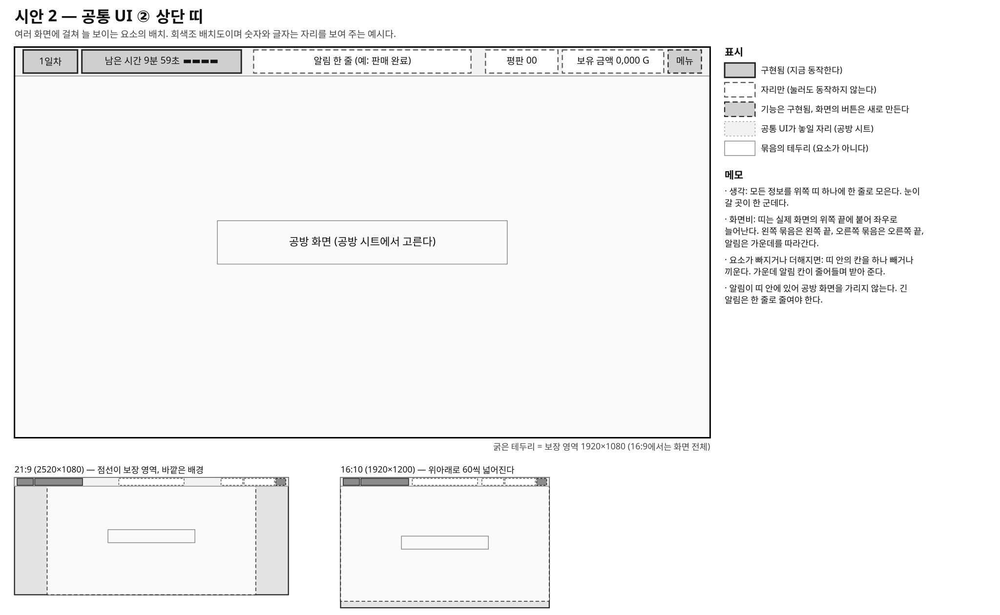
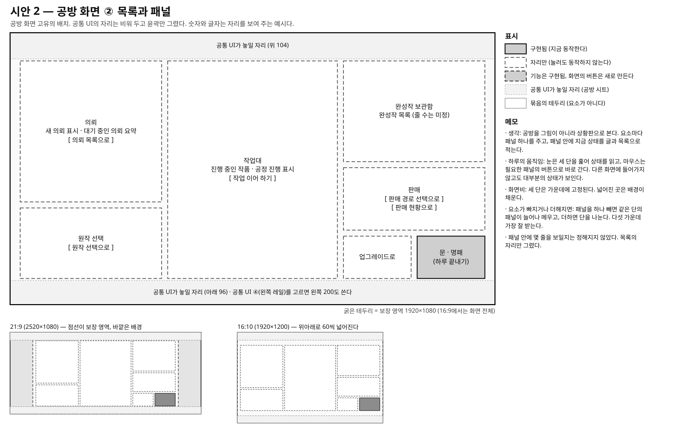
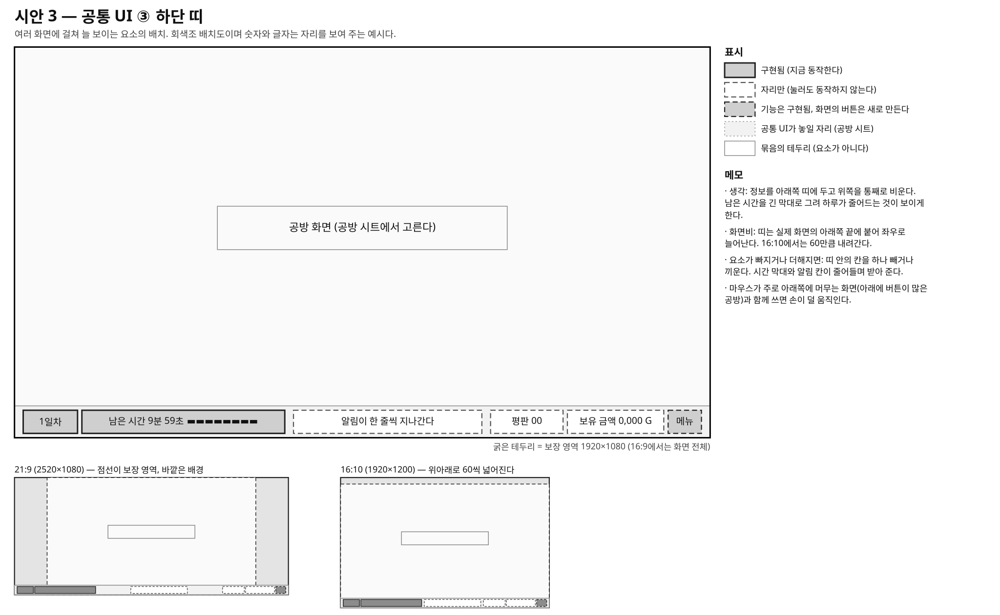
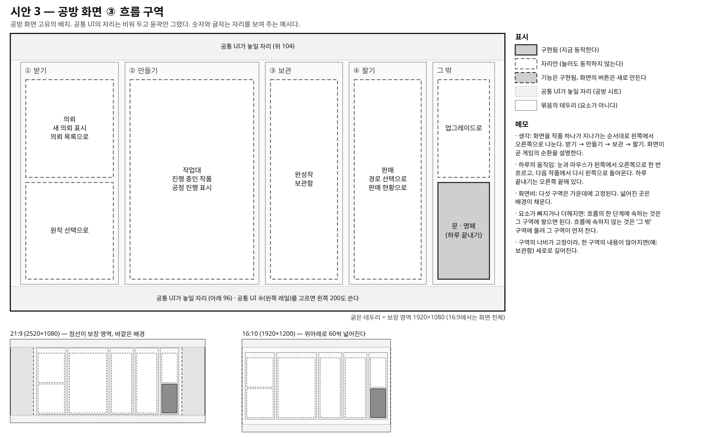
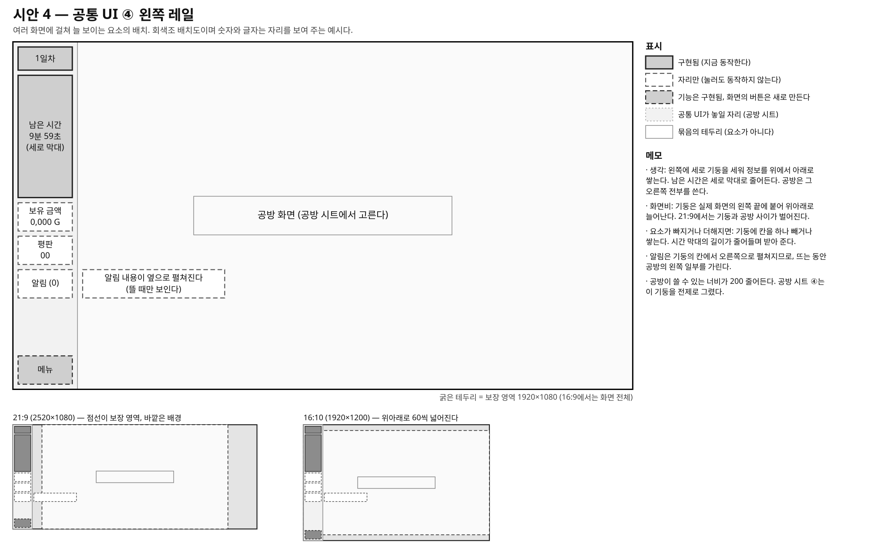
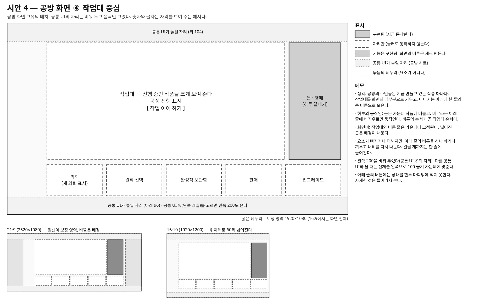
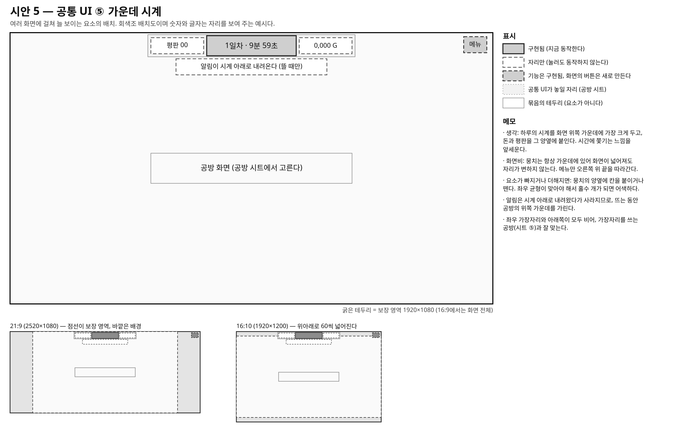
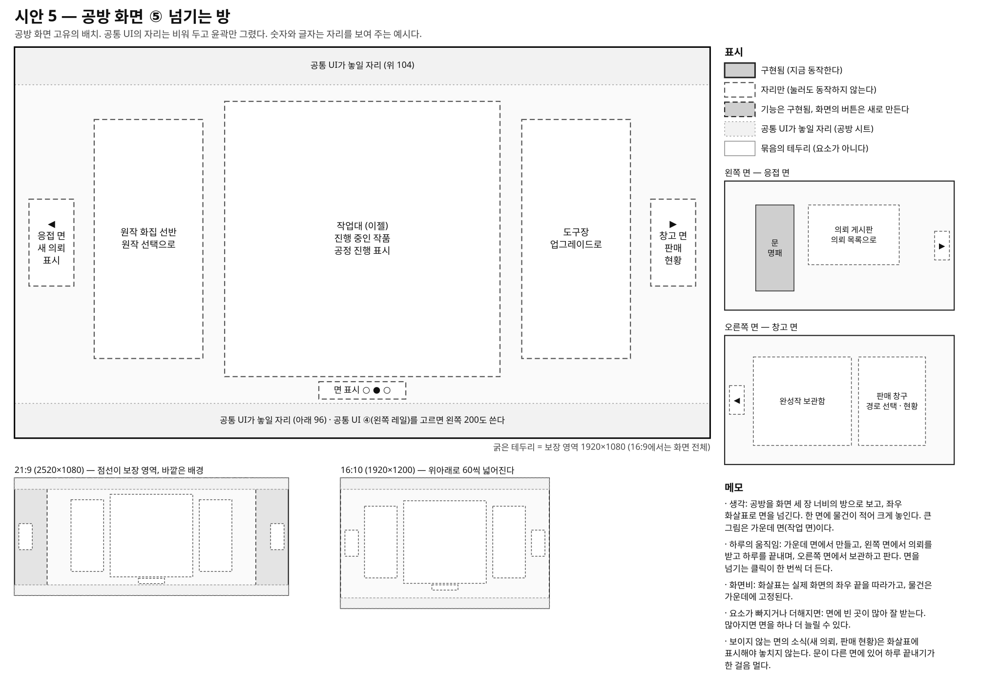

화면 구성 시안 5가지 (회색조 배치도)
공통 UI와 공방 화면은 서로 다른 시안에서 골라 조합할 수 있다. 조합표와 설명은 docs/roles/designer/outputs/15_화면구성_시안.md에 있다.
시안 1 — 공통 UI ① 네 모서리 / 공방 화면 ① 한 장의 방
ui.svg · workshop.svg


시안 2 — 공통 UI ② 상단 띠 / 공방 화면 ② 목록과 패널
ui.svg · workshop.svg


시안 3 — 공통 UI ③ 하단 띠 / 공방 화면 ③ 흐름 구역
ui.svg · workshop.svg


시안 4 — 공통 UI ④ 왼쪽 레일 / 공방 화면 ④ 작업대 중심
ui.svg · workshop.svg


시안 5 — 공통 UI ⑤ 가운데 시계 / 공방 화면 ⑤ 넘기는 방
ui.svg · workshop.svg

